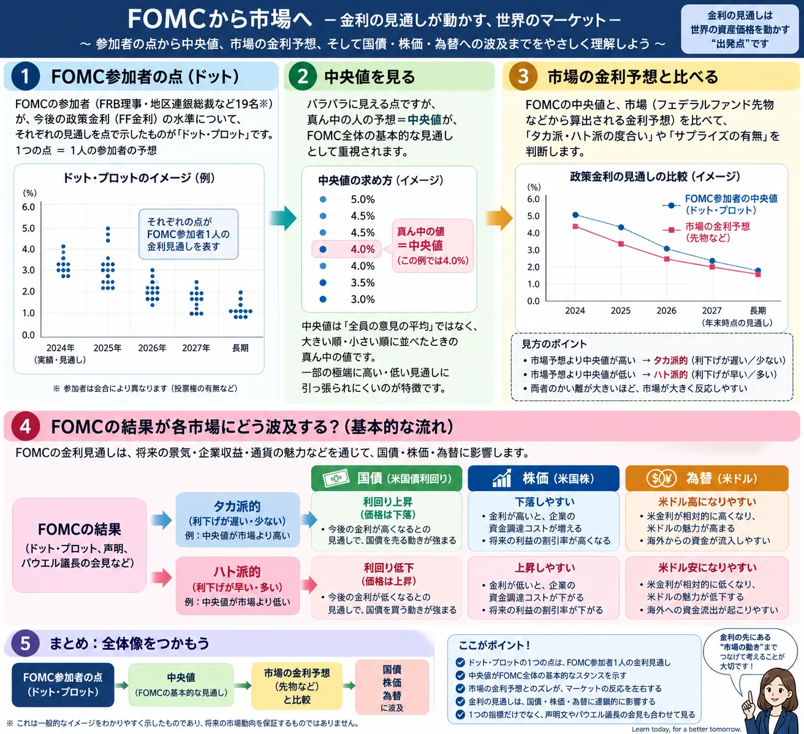

Overview
ドットチャートから市場へ影響する流れを最初に整理

最重要ポイント： 相場が反応するときに重要なのは、ドットチャートの数字だけではありません。 「発表前に市場が何を予想していたのか」との差を見ることが大切です。
Definition
ドットチャートとは？
ドットチャートは、FRBが公表するSummary of Economic Projections（SEP：経済見通し）の中で示される、 FOMC参加者それぞれの政策金利見通しを点で表したものです。 一般には「ドットチャート」や「ドットプロット」と呼ばれています。
SEP
FOMC参加者による経済見通し
SEPでは、実質GDP成長率、失業率、PCEインフレ率、コアPCEインフレ率などの経済見通しとともに、 各参加者が適切だと判断するフェデラルファンド金利の水準が示されます。
Appropriate Policy
「適切だと考える金利」の見通し
ドットは単純な「金利がこうなるだろう」という予想だけではなく、 各参加者が物価安定と最大雇用という目標を達成するために適切だと考える政策金利の経路を前提としています。
2026年のFOMC日程では、SEPを伴う会合は3月・6月・9月・12月に設定されています。 FOMCそのものの仕組みは「FOMCとは？」でも詳しく解説しています。
One Dot
1つの「点」は何を意味する？
1つの点 ＝ FOMC参加者1人の政策金利見通し
FRBの公式資料では、各点は参加者1人が対象年末または長期的に適切だと判断する フェデラルファンド金利の目標レンジの中央値、または適切な目標水準を表しています。
匿名
誰がどの点を付けたかは分からない
個々の点は参加者の見通しですが、「この点はFRB議長」「この点は○○連銀総裁」という対応関係は公表されません。 そのため特定の人物の将来予想として読むことはできません。
Not a Decision
将来の政策金利を決定したものではない
ドットはFOMCで正式決定された将来の政策金利ではありません。 参加者それぞれが、その時点の情報をもとに適切だと考えている政策金利の見通しです。
How to Read
ドットチャートはどうやって読む？
ドットチャートでは、縦方向に政策金利の水準、横方向に対象となる年や「Longer run（長期）」が並びます。 各年の列に複数の点が配置され、参加者の見通しの分布を確認できます。
縦方向
政策金利の水準
上にある点ほど高い政策金利を適切だと考えており、下にある点ほど低い政策金利を適切だと考えていることを表します。
横方向
対象年・長期見通し
最新の2026年9月SEPでは、2026年・2027年・2028年・2029年とLonger runについて参加者の政策金利見通しが示されています。
上の図は仕組みを理解するための簡易イメージです。実際の点の配置や数値は、FRBが公表する最新のSEPを確認してください。
Median
「中央値」とは？
金融ニュースでは「ドットチャートの中央値」「年末の政策金利見通し」という表現がよく使われます。 複数の参加者の見通しを並べ、その中央に位置する値を見ることで、参加者全体の見方を大まかに把握できるためです。
中央値 ＝ FOMCが約束した将来の政策金利ではありません。
あくまで参加者の見通しを並べたときの中央の値です。
また、中央値だけを見ると参加者間の意見の違いが見えにくくなります。 そのため、中央値と同時に点がどの程度ばらついているのかも確認することが重要です。
Dispersion
点の「ばらつき」から何が分かる？
同じ年について高い金利から低い金利まで点が広く分散している場合、 FOMC参加者の間で経済や適切な金融政策について見方に違いがある可能性があります。
- インフレ
- 雇用
- 景気
- 経済成長
- 金融環境
- 適切な金融政策
反対に点が比較的集中していれば、参加者の見通しが近いことを示します。 ただし、点が集中しているからといって将来の政策が確定したわけではありません。
Market Reaction
なぜドットチャートで株価や為替が動くの？
金融市場はFOMCが発表される前から、経済指標やFRB関係者の発言などをもとに将来の金利を予想しています。 そのため、新しいドットチャートが市場の想定と異なると、金利予想の修正が起きる場合があります。
市場が多くの利下げを予想していた場合
逆方向の場合
重要なのは「数字そのもの」より「市場予想との差」です。 同じドットチャートでも、事前にどこまで市場へ織り込まれていたかによって反応は変わります。 この考え方は「市場予想とは？」でも詳しく解説しています。
Dot Plot vs Market
ドットチャートと「市場予想」は別物
| 比較項目 | ドットチャート | 市場予想 |
|---|---|---|
| 誰の見通しか | FOMC参加者 | 金融市場の参加者 |
| 何を見るか | 各参加者が適切だと考える政策金利 | 市場価格や調査などから読み取られる将来予想 |
| 一致するか | 一致するとは限らない | |
| FOMC時の注目点 | FRB側の見通しと市場側の予想にどの程度の差があるか | |
※ スマートフォンでは横にスクロールできます。
市場がすでにドットチャートに近い水準を予想していれば、発表されても大きな反応が起きない場合があります。 一方、両者に大きな差があれば、市場参加者が金利見通しを修正する材料になることがあります。
Policy Rate
ドットチャートと政策金利の関係
現在
FOMCで決定する政策金利
FOMCでは、その時点でのフェデラルファンド金利の誘導目標などを決定します。
将来
ドットチャートの金利見通し
将来について各参加者が適切だと考える政策金利の水準を示します。将来のFOMC決定そのものではありません。
「現在決定された政策金利」と「将来について参加者が示した政策金利見通し」を混同しないことが重要です。 政策金利の基本は「政策金利とは？」で確認できます。
Important Caution
ドットチャート通りに金利が動くとは限らない
ドットチャートを見るうえで最も重要な注意点の一つです。 ドットは将来の政策金利を予告したものでも、FRBがその水準にすると約束したものでもありません。
- インフレ
- 雇用
- 景気
- 金融環境
- 経済データ
- リスク要因
「ドットチャートで4％だから将来必ず4％になる」という読み方はできません。
ドットチャートは、その時点で利用可能な情報と各参加者の経済見通しを前提とした判断です。
Why It Changes
ドットチャートはなぜ変化するの？
インフレが想定より強い場合
物価上昇圧力が想定より長く続くと判断されれば、高い金利をより長く維持することが適切だと考える参加者が増える可能性があります。
景気・雇用が弱い場合
景気や雇用が想定以上に弱くなれば、より低い政策金利が適切だと判断される可能性があります。
ただし「インフレ上昇＝必ずドット上昇」「雇用悪化＝必ず利下げ」という単純な関係ではありません。 FOMC参加者は幅広い経済データやリスクを総合して判断します。 中央銀行の政策姿勢を表す用語は「タカ派・ハト派とは？」でも解説しています。
Economic Data
CPI・PCE・雇用統計とドットチャートの関係
FOMC参加者が金融政策を考える際には、1つの経済指標だけを見るわけではありません。 物価、雇用、賃金、景気、金融環境など幅広い情報が判断材料になります。
Bond Market
ドットチャートと国債利回りの関係
ドットチャートによって将来の政策金利に対する市場の見方が変化すると、 米国債利回りが反応する場合があります。 特に金融政策への感応度が比較的高い年限では、政策金利見通しの変化が意識されやすくなります。
ただし、国債利回りはドットチャートだけで決まりません。 インフレ期待、景気見通し、国債の需給、財政状況、タームプレミアムなど多くの要因が影響します。
Stocks
ドットチャートと株価の関係
将来の政策金利見通しが変化すると、企業の資金調達環境や景気見通し、株式のバリュエーション、 投資家のリスク選好などを通じて株価が反応する場合があります。
高い金利が意識される場合
株価の重しになる場合がある
市場が想定していたより高い金利が長く続くとの見方になれば、企業の資金調達コストや株式評価への影響が意識されることがあります。
低い金利が意識される場合
株価の支援材料になる場合がある
市場予想より低い金利が適切との見通しが示されれば、金融環境の緩和期待が株価の支援材料になる場合があります。
ドット上昇＝必ず株安、ドット低下＝必ず株高ではありません。 金利見通しが変化した理由、景気・企業業績、市場が事前に何を織り込んでいたかなどによって反応は変わります。 株価変動の基本は「株価はなぜ上下するのか？」でも解説しています。
USD/JPY
ドットチャートとドル円の関係
米国の将来の政策金利見通しが変わると、米国債利回りや日米金利差に対する市場の見方が変化し、 ドル円が反応する場合があります。
ただし為替市場は、日本銀行の金融政策、米国以外の金利、世界景気、リスク選好、 地政学リスク、投資家のポジション調整など多数の要因で動きます。 ドットチャートだけでドル円の方向が決まるわけではありません。
SEP
ドットチャートと経済見通し（SEP）はセットで見る
ドットチャートだけを切り離して見るのではなく、その背景にあるSEPの経済見通しも確認することが重要です。 最新の2026年9月SEPでは、実質GDP成長率、失業率、PCEインフレ率、コアPCEインフレ率、 そして適切な政策金利の見通しなどが掲載されています。
Growth
実質GDP成長率
経済がどの程度成長すると参加者が見込んでいるかを確認します。
Employment
失業率
雇用環境に対する参加者の見通しを確認します。
Inflation
PCE・コアPCEインフレ率
FRBの物価安定目標との関係から、インフレがどのように推移すると考えられているかを確認します。
Policy
政策金利見通し
その経済見通しのもとで、各参加者がどのような政策金利を適切だと考えているかを確認します。
「ドットが上がった・下がった」だけでなく、 なぜ参加者の金利見通しが変化したのかを考えるために、GDP・失業率・インフレ見通しも合わせて確認すると理解しやすくなります。
FOMC Checklist
FOMCニュースを見るときは何を確認する？
-
今回の政策金利はどうなったか
利上げ・据え置き・利下げのどれだったのか、目標レンジを確認します。
-
事前の市場予想と一致したか
決定そのものより、市場が想定していた内容との差が重要になる場合があります。
-
ドットチャートの中央値はどう変化したか
前回SEPと比べて、各年の中央値が上がったのか下がったのかを確認します。
-
点のばらつきはどうなったか
参加者の見通しが集中しているのか、広く分散しているのかを確認します。
-
経済成長・失業率・インフレ見通しはどう変化したか
金利見通しが変化した背景をSEPから確認します。
-
FOMC声明はどう変化したか
前回から表現が変更されていないか確認します。
-
FRB議長会見では何が説明されたか
政策判断の背景、リスク、今後のデータへの考え方などを確認します。
-
米国債利回り・株価・為替がどう反応したか
市場が発表内容をどのように受け止めたのかを確認します。
FOMCは「利上げした」「利下げした」という1点だけで判断せず、 政策決定・SEP・ドットチャート・声明・議長会見・市場反応を合わせて見ることが大切です。
Latest SEP
最新のドットチャートはどうなっている？
2026年9月22日の記事作成時点で最新のSEPは、 2026年9月15～16日のFOMC会合に伴って公表された2026年9月SEPです。
FRB公式SEPによると、参加者の「適切な政策金利」の中央値は、 2026年末4.1％、2027年末4.1％、2028年末3.9％、2029年末3.6％、 Longer run（長期）が3.2％でした。
これは将来の政策金利をFOMCが決定したという意味ではなく、 2026年9月時点での参加者の見通しの中央値です。
| 対象 | 2026年9月SEP | 2026年6月SEP |
|---|---|---|
| 2026年末 | 4.1％ | 3.8％ |
| 2027年末 | 4.1％ | 3.6％ |
| 2028年末 | 3.9％ | 3.4％ |
| 2029年末 | 3.6％ | ― |
| Longer run | 3.2％ | 3.1％ |
※ スマートフォンでは横にスクロールできます。
6月SEPと比べると、9月SEPでは2026年から2028年の政策金利中央値が高くなっています。 ただし、この変化だけから将来のFOMC決定を断定することはできません。 点の分布や経済見通しも合わせて確認する必要があります。
2026年9月SEPの主な経済見通し
| 項目 | 2026年 | 2027年 | 2028年 | 2029年 |
|---|---|---|---|---|
| 実質GDP成長率 | 2.3％ | 2.4％ | 2.2％ | 2.1％ |
| 失業率 | 4.1％ | 4.1％ | 4.1％ | 4.1％ |
| PCEインフレ率 | 3.7％ | 2.3％ | 2.1％ | 2.0％ |
| コアPCEインフレ率 | 3.4％ | 2.5％ | 2.2％ | 2.0％ |
※ スマートフォンでは横にスクロールできます。
SEPの数値は将来の経済状況を保証するものではありません。 経済データや金融環境などが変化すれば、次回以降のSEPとドットチャートも変化する可能性があります。
公式資料
Related Articles
ドットチャートと一緒に読みたい基礎知識
ドットチャートは、FOMC・政策金利・物価・雇用・債券市場をつなげて理解すると読みやすくなります。
FAQ
ドットチャートに関するよくある質問
-
ドットチャートとは何ですか？
FRBが公表するSEP（経済見通し）の中で、FOMC参加者それぞれが適切だと考える将来の政策金利水準を点で示したものです。「ドットプロット」とも呼ばれます。 -
ドットチャートは誰が予想しているのですか？
FOMC参加者であるFRB理事と地区連銀総裁が、それぞれの経済見通しと適切な金融政策の判断に基づいて示しています。 -
1つの点は何を意味しますか？
1つの点はFOMC参加者1人の政策金利見通しです。対象年末などに適切だと考えるフェデラルファンド金利の水準を表します。 -
ドットチャートの中央値とは何ですか？
参加者の政策金利見通しを並べたとき中央に位置する値です。参加者全体の見方を大まかに把握する材料として注目されますが、将来の政策金利を約束するものではありません。 -
誰がどの点を付けたか分かりますか？
分かりません。個々の点とFOMC参加者の氏名は対応付けて公表されていません。 -
ドットチャート通りに政策金利は動きますか？
必ずしも動きません。インフレ、雇用、景気、金融環境などが変化すれば、参加者が適切だと考える政策金利も変化する可能性があります。 -
ドットチャートと市場予想は何が違いますか？
ドットチャートはFOMC参加者側の政策金利見通しです。一方、市場予想は金融市場の価格や調査などから読み取られる市場参加者側の予想です。両者が一致するとは限りません。 -
なぜドットチャートで株価や為替が動くのですか？
ドットチャートが市場の事前予想と異なると、将来の金利予想が修正される場合があるためです。その結果、国債利回り、株式の評価、為替市場で意識される金利差などが変化することがあります。 -
ドットチャートはいつ公表されますか？
ドットチャートはFOMC参加者の経済見通しであるSEPの一部として公表されます。2026年のFOMC日程では、3月・6月・9月・12月の会合がSEPを伴う会合として設定されています。
Summary
まとめ｜ドットチャートは「将来の金利を約束する表」ではない
- ドットチャートはFOMC参加者の政策金利見通しを点で示したものです。
- 1つの点は参加者1人の見通しを表します。
- 誰がどの点を付けたのかは公開されません。
- 中央値は市場で注目されますが、将来の政策金利を約束するものではありません。
- 中央値だけでなく、点のばらつきも重要です。
- ドットチャートと市場予想は別物です。
- 市場予想との差によって株式・債券・為替が反応する場合があります。
- 経済データや金融環境が変化すれば、ドットチャートも変化する可能性があります。
- SEPのGDP・失業率・インフレ見通しと合わせて読むことが重要です。
- ドットチャートだけを根拠に投資判断を行わないことが大切です。
Next Step
FOMCと政策金利の基本も一緒に確認する
ドットチャートを理解したら、FOMCが実際に何を決める会合なのか、政策金利が景気・物価・株価・為替へどのようにつながるのかも確認すると、金融ニュースを読みやすくなります。
ご利用にあたっての注意事項
本記事は一般的な情報提供と金融教育を目的としており、特定の企業・銘柄・ETF・通貨・金融商品の推奨や、投資の勧誘を目的としたものではありません。 金融政策、経済見通し、市場予想は今後の経済状況や政策判断によって変化する可能性があります。 株式、債券、外国為替、投資信託などの金融商品は元本保証がなく、相場変動、為替変動、金利変動、信用状況、制度変更などにより損失が生じる場合があります。 実際の投資判断や取引を行う際は、FRBなど関係機関の最新の公式情報、金融機関の契約締結前交付書面、商品説明書、目論見書などを確認し、 ご自身の判断と責任で行ってください。